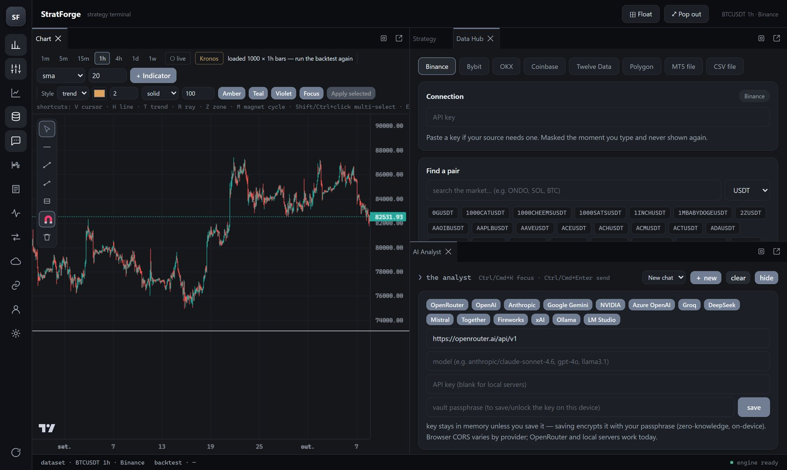

StratForge
A trading strategy workbench built around one question: is this backtest telling the truth? It tests strategies with fees and slippage, checks whether a good result survives data it was not fitted on, and has an AI analyst that asks the engine instead of making numbers up.

One hour Bitcoin candles loaded from Binance, the data hub and the analyst, in the web version.
The problem
Most backtests look great because they were tuned until they did.
Try enough parameters on the same price history and one of them will look profitable by chance. Most retail tools show that lucky result as if it were an edge. I wanted a tool whose default answer is "prove it".
What it does
Build, test, then try to break it.
- Strategies are data, not codeA strategy is a JSON document checked against a schema, so an AI agent can write one without being able to run arbitrary code.
- Honest backtestsSignals on the bar's close, fills at the next bar's open (no look-ahead), stop-loss checked before take-profit inside a bar, and fees and slippage on every trade.
- Overfitting testsShuffled trade order (Monte Carlo), a held-out final 30% of the data, walk-forward folds, and the deflated Sharpe ratio, which discounts the result by the number of variants tried.
- A verdict with reasonsA grade from A to F that says exactly why, for example "out-of-sample Sharpe collapses from 1.80 to 0.20 — likely overfit".
- Live marketA Binance WebSocket stream updates the last candle in real time, with timeframe buttons from 1 minute to 1 week.
The analyst
An AI that calls the engine instead of guessing.
Language models are bad at arithmetic and good at sounding sure. So the analyst never computes a result
itself: it calls the same deterministic engine the user does, through tools such as
backtest_and_validate, optimize_strategy, assess_regimes and
get_live_market, and reports what came back.
- Every message carries a snapshot of the chart the user is looking at: symbol, timeframe, last candles and indicators.
- A "watch the chart" mode comments on each new closed candle.
- It works with the user's own model: OpenAI, Anthropic, Gemini, Azure OpenAI, OpenRouter, or a local model through Ollama or LM Studio. The key is encrypted with a passphrase and never leaves the device.
- It can also ask Kronos, an open model trained only on price candles, for a forecast, and it is told what my out-of-sample test of that model found.
Built with
- TypeScript
- React
- Vite
- Zod
- Lightweight Charts
- Tauri 2
- WebSocket
- LLM tool calling
- GitHub Actions
A monorepo with the strategy schema, the backtest engine, the data importers (Binance, MetaTrader 5 and CSV) and the app, which also builds as a Windows desktop program with Tauri.